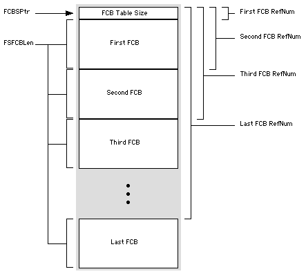
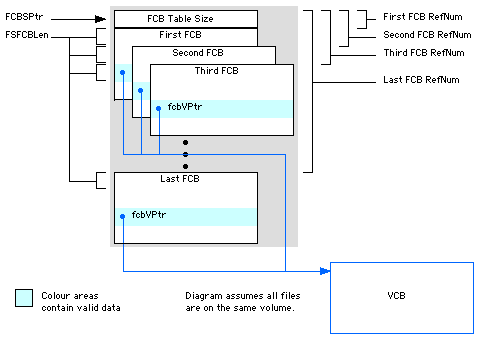

|
|
Mac OS 9.0 changes
the format of the File Control Block (FCB) table
significantly. This technote explains the original format of
the FCB table, how the use of the FCB table has evolved over
time, and how you can access FCB information in a compatible
way.
All Mac OS developers should read the
Concrete Advice section to
ensure that their software is compatible with Mac OS 9.0 and
beyond.
If your software is not compatible with Mac OS 9.0
(specifically, it causes a system error 119), you should read the Debugging FCB
Problems section.
The other sections of the technote are background
material for the Mac OS archaeologists out there.
Updated: [Oct 5 1999]
|
Introduction
Prior to Mac OS 9.0, the Macintosh was limited to 348
simultaneously open files (FCBs). This limit proved to be a
problem for both users and developers, so one of the design
goals of Mac OS 9.0 was to increase this limit significantly.
Everything has its price, however, and the price of
increasing the number of FCBs is compatibility. Mac OS has
used the same FCB table format since the introduction of HFS
(1986) and a number of developers have (erroneously) grown
dependent on this format.
|
Note:
The term "fork control block" is technically more
accurate than the historical "file control
block." To avoid confusion, this technote uses the
abbreviation "FCB" everywhere.
|
This technote describes the changes to the FCB table
format over time, and the consequences of these changes to
developers. The full story is quite involved, and so the
technote starts with some concrete advice for those folks
with more legacy code than time.
Concrete Advice
Mac OS 9.0 is not the ultimate evolution of the FCB
table. Apple expects to make further changes as the system
evolves. You should look at your code now to strive for
compatibility in the future.
One specific thing to check is your use of file reference
numbers. File reference numbers are defined to be positive
SInt16's. There are no special file
reference numbers. The number 2 is not guaranteed
to be the file reference number of System file. The equality
(refNum mod 4) = 2 (or (refNum mod 94) = 2, pre-Mac OS 9.0)
is not guaranteed either.
|
Note:
The number 0 (zero) is suitable as both a nil file
reference number and a nil device reference number.
|
For application-level software (applications, shared
libraries, and so on), the best road to future
compatibility is Carbon. The Carbon programming
interfaces are specifically designed to be supportable on
future systems. If you are programming for Carbon, you
should be isolated from future, low-level File Manager
changes.
Specifically, if you want to access FCB
information from application-level code, you should use the
File Manager routine FSGetForkCBInfo
(or its parameter block variants
PBGetForkCBInfoSync and
PBGetForkCBInfoAsync, or
PBGetFCBInfoSync and
PBGetFCBInfoAsync on pre-Mac OS 9.0 systems).
There are, however, circumstances in which it is not
possible to call the File Manager to get FCB information.
For example, if you are writing a File System Manager (FSM)
plug-in, or you are writing a system extension and your code
is executing within the context of a File Manager patch. In
these circumstances, you may need to access the FCB
immediately (that is, without queuing a File Manager
request).
If you need to access an FCB immediately and
FSM is available, you should
use the FSM accessor routines. These routines are
discussed later in this technote.
The only time it is acceptable to access the FCB table
directly is when you need immediate access to the FCB and
FSM is not present.
Debugging FCB
Problems
If your software does not work on Mac OS 9.0 and you
suspect you have a dependency on the FCB table, there are a
number of ways you can debug it. This section describes how
you can search your source code looking for FCB-related bugs
and some run-time debugging techniques you can use.
Searching Your Source Code
One obvious way to determine whether your software relies
on the format of the FCB table is to run it under Mac OS
9.0. The tricky part, however, is exercising your entire
source base. The FCB table dependency may be hiding in a
rarely used feature that isn't exercised by your test suite.
A good alternative to testing is to search your source code
looking for references to the FCB table.
For PowerPC software you should start by running your
program through the Carbon Dater tool (available on the
Carbon
web site). This will flag any references to the FCB table
low-memory accessor routines (LMGetFCBSPtr,
LMSetFCBSPtr, LMGetFSFCBLen, and
LMSetFSFCBLen) and likely PowerPC code
sequences that indicate a low-memory access. Unfortunately,
Carbon Dater cannot detect all low-memory accesses, so you
should search your source code textually as well.
Carbon Dater is not an option for 68K software, so the
best thing to do is search your source code looking for some
(uncommon) strings that indicate direct access to the FCB
table. The strings to look for are:
- "FCBSPtr" and "FSFCBLen" - The official names for
the key low-memory globals.
- "34E" and "3F6" - The above in hexadecimal.
- "846" and "1014" - The above in decimal.
If you don't have source for all of your software, you
can also search your 68K code resources for $034E and $03F6.
Both of these values are rare as 68K instructions, so if you
hit one, it is worth disassembling the surrounding code to
see whether it is an FCB table access.
System Error 119
If you run your software and the system crashes with a
system error dsMustUseFCBAccessors 119, it is a
sure sign that your PowerPC code is accessing the FCB table
directly. See PowerPC Code
and Low-Memory Accessors for details.
Horrible Crashes
If your application dies with an access exception (or bus error) on Mac OS 9.0, you can look at the program state to
determine whether the problem is FCB related. Any of the
following in your Processor registers or local variables
might indicate FCB-related troubles.
- Pointers in to the 32-KB pointer block referenced by
the low-memory global
FCBSPtr ($034e).
- Values of
$68F168F1, possibly shifted in either direction by 16 bits. This is the bus error value which
the File Manager uses to fill unused entries in the fake
FCB table. See 68K Code
and Low Memory for details.
- Values that are the address of a VCB (using MacsBug's
vol command to display the VCB list),
possibly shifted in either direction by 16 bits.
68K Code and Low
Memory explains why this is likely.
Back to top
Before the Beginning
FCBs, as we know them today, were introduced as part of
HFS. HFS is built in to all 128K ROMs or later (starting
with the Macintosh Plus in 1986), and was available as an
extension for 64K ROM computers (the Macintosh 128 and 512).
Except for a few corner cases, this technote assumes that
you are programming for a 128K ROM system or later. This is
a fair assumption because 64K ROM machines do not support
System 7.0. Moreover, no current development environment
supports development for 64K ROMs. In short, if you are
developing for the 64K ROM, you have our sympathy but not
our support.
Back to top
In the Beginning
This section described the classic FCB table format,
which was introduced with the HFS file system and retired in
Mac OS 9.0. It also discusses some of the limitations of
this format.
Classic FCB Table
When it was introduced, HFS used an simple table to store
FCBs. The table is held in a pointer block in the system
heap and is pointed to by the low-memory global
FCBSPtr ($34E). The table consists of a two
byte header (which contains the size of the pointer block)
followed by an array of FCBs, each of which is a fixed size.
This size is determined by another low-memory global,
FSFCBLen ($3F6), which contained the value 94 when HFS was introduced.
The format of the classic FCB table is shown in below.

A file reference number is the offset into this table of
the corresponding FCB. The file reference number for the
'Nth file is 2 + (N - 1) * FSFCBLen, which
yields the sequence 2, 96, 190, 284, and so on.
FCB Table Design Limitations
The basic structure of the FCB table implies a limit to
the number of FCBs, and hence the number of simultaneously
open files. The original Macintosh (which was extremely
memory constrained) created a table with 10 FCBs. This
number was derived from the bbCntFCBs field of
the boot block
(BootBlkHdr).
When the Macintosh Plus was introduced, the system
automatically scaled this number to suite the installed
memory. If the computer had 1 MB or more, the system created
an FCB table with bbCntFCBs * 4 entries. The
result was an FCB table with 40 entries on most System 6
computers.
Towards the end of System 6's lifespan, this limit proved
to be a problem for many users. There were two solutions.
First, one could use a disk editor (the legendary FEdit,
for example) to increase the limit by editing the boot
block. Second, one could install the "Up Your FCBs" system
extension, which would expand the FCB table to its maximum
size at system startup.
The maximum size of the classic
FCB table is 32 KB, primarily because a file reference
number is a 16-bit signed offset into the table. This yields
a maximum number of FCBs of (32768 - 2) div
FSFCBLen, or 348 for the standard FCB size of
94 bytes.
|
Note:
Inside
Macintosh: Files states that the maximum number
of open files with the classic FCB table is 342.
This is incorrect. The limit is 348. |
|
Note:
The maximum number of FCBs is not the same as the
maximum number of files an application can open.
The system uses some of these FCBs for its own
internal needs. Some of this usage is an
unavoidable implementation detail of the file
system (such as the FCBs for the HFS catalog and
extents files), while other files are explicitly
opened by system software (such as the System file
and various shared libraries). Modern systems
maintain a lot of open files and severely constrain
the number of FCBs available to application
software. For example, an easy install of Mac OS
8.6 has 100 files open before you get to the
Finder. |
Compatibility Notes
The classic FCB table was never a public data
structure. While the format is well known - it is
described in Technote 1089,
"HFS
Elucidations Revisited" - all these descriptions include
a warning that relying on this format will cause future
compatibility problems.
There is, however,
one documented use of the FSFCBLen low-memory
global, namely to determine whether the system has HFS
available. This mechanism is described in Technote FL_35,
"Determining
Which File System Is Active." This technique requires
that FSFCBLen be positive if HFS is available,
and negative otherwise. There is no documented use
of FSFCBLen other than testing its
sign.
Back to top
System 7.0
System 7.0 introduced a number of new file system
features related to FCBs. This section describes those
features. Remember that all versions of System 7 and Mac OS
8 use the classic FCB table
format, and inherit many properties from that format.
Parallel FCB Table
System 7.0 was the first system to track FCB usage by
process. When a process opens a file, the FCB is tagged as
belonging to that process. If the process quits
unexpectedly, the Process Manager automatically closes all
the FCBs owned by it.
Unfortunately, there was not enough space to store the
ProcessSerialNumber (PSN) of the owning process
in the classic FCB. While it was possible to grow the FCB
(by changing FSFCBLen), this had two important
drawbacks.
- Increasing the size of an FCB would decrease the maximum number of FCBs, because the maximum overall size of the classic FCB table size is limited to 32 KB.
- Increasing the size of an FCB might cause compatibility problems for developers who had hard-coded
sizeof(FCBRec) into their code (bad developers!).
Instead, System 7.0 introduced the concept of a parallel
FCB table. This table was used to store the PSN for the
process that opened the file and, when a process quit, to
close all the files that were left open by that process.
IMPORTANT:
The parallel FCB table was never documented to
third-party developers and has been removed in Mac
OS 9.0. It is discussed here for informative
purposes only and you should not rely on any
details of the table or its implementation.
Process Manager only tracks files that are opened
synchronously. Files that are opened asynchronous (using
PBHOpenDFAsync, for example) are not tracked by
the Process Manager because these calls can be made at
interrupt time, and there is no easy way to determine the
owning process at interrupt time.
Dynamically Growing FCB Table
System 7.0 also introduced a mechanism to grow the FCB table dynamically. When a program attempts to open a file
while the FCB table is full, the system returns a
tmfoErr (-42). When this happens under System
7.0, the system catches the error, attempts to grow the FCB
table, and then retries the open. The system can only grow
the FCB table if all of the following are true.
- The request to open a file was made synchronously.
Asynchronous requests (using
PBHOpenDFAsync,
for example) can potentially be made at interrupt time,
when it is illegal to call the Memory Manager to grow the
FCB table.
- There is enough space in the system heap for the new
table.
- The table is smaller than its maximum of 348 FCBs.
Because of these restrictions, it is still possible to
get a tmfoErr error under System 7.0 and later,
although you are unlikely to get one if you are opening the
file synchronously unless the FCB table is completely full.
Back to top
System 7.5
System
7.5 was the first system to include the File System
Manager (FSM) as part of the System file. FSM provides a
number of routines which allow you to access FCBs without
assuming knowledge of the FCB table format.
The four FCB accessor functions are:
UTResolveFCB, which maps a file
reference number to an FCBUTIndexFCB, which indexes through the
open FCBs on a volumeUTLocateFCB, which finds an FCB by file
number and volumeUTLocateNextFCB, which finds additional
FCBs (after using UTLocateFCB) by file
number (or name) and volume
These routines are documented in the "Guide to the File
System Manager", which is part of the
File
System Manager SDK.
IMPORTANT:
These FCB accessor routines are not in InterfaceLib
prior to Mac OS 8.5. The MoreInterfaceLib module of
the DTS sample code
MoreIsBetter
has Mixed Mode glue for calling these routines from
CFM code on earlier systems.
IMPORTANT:
In Mac OS 9.0, UTIndexFCB will also
return iterator control blocks. If you are only
interested in open files, you must explicitly skip
these iterator control blocks using the technique
described
below.
|
Note:
These FCB accessor routines are not part of Carbon.
Carbon code does not have immediate access to FCBs;
see the Concrete
Advice section for details. |
These FCB accessor routines were originally intended for
use by FSM plug-ins (and other foreign file systems) but it
is appropriate to use them in other code. However, before
you use these routines you should read the
Concrete Advice section to see
whether you would be better off using File Manager routines
instead (for example, FSGetForkCBInfo).
You can test for the
availability of these accessors with the following code.
static Boolean HasFCBAccessors(void)
{
Boolean result;
long response;
result = false;
// Make sure FSM is installed
if ( Gestalt(gestaltFSAttr, &response) == noErr ) {
if ( (response & (1L << gestaltHasFileSystemManager)) != 0 ) {
// FSM 1.2 is the first version to support the
// the documented API, so check the version
if ( Gestalt(gestaltFSMVersion, &response) == noErr ) {
// Make sure we have FSM 1.2 or later
if ( (unsigned long)response >= 0x0120) {
result = true;
}
}
}
}
return result;
}
|
Back to top
Mac OS 8.1
Mac
OS 8.1 introduced a new, built-in volume format,
HFS
Plus. Despite significant changes to the internals of
the File Manager, Mac OS 8.1 changed the FCB table very
little.
The most important change was required because HFS Plus
needs more space to store its extents information. The
classic FCB table stores the
first 3 extents of a file in the fcbExtRec of
the FCB, where each extent is a 16-bit allocation block
number and a 16-bit length. HFS Plus needs to store the
first 8 extents of a file, where each extent is a 32-bit
allocation block number and a 32-bit length. Obviously the
new extent data would not fit into the classic FCB.
The solution adopted was to store the extents data for
files on HFS Plus volumes in the
parallel FCB table, leaving
the fcbExtRec field of the FCB unused (and set
to zero). This was a very compatible solution because it
left the classic FCB table mostly unchanged. Only software
that relied on fcbExtRec broke, and that
software would have broken anyway because of the new,
larger, allocation block numbers.
Back to top
Mac OS 9.0
This section describes the features of the Mac OS 9.0
File Manager as they relate to FCBs. It also explains some
of the rationale behind the changes made in Mac OS 9.0. It
even explains why the new limit to the number of open files
is 8,169!
Design Goals
Mac
OS 9.0 includes a significant enhancements to the File
Manager, including:
- new programming interfaces to access HFS Plus
features such as long file names (255 Unicode characters)
and large files (> 2 GB)
- a new FCB table format that extends the limit of the
number of open files from 348 to 8169
- the ability to make most File Manager calls from
pre-emptive tasks (MP tasks)
One of the design criteria for the enhanced File Manager
was to implement these new features without breaking
software that uses documented programming interfaces.
Increasing the maximum number of open files required a
change to the FCB table format, but this format has never
been documented as something that developer can rely on.
|
Note:
Developers have been warned to not rely on the
format of the FCB table many times.
- Inside Macintosh II, page 127,
"Warning: The size and structure of a file
control block may be different in future
versions of Macintosh system software."
- Inside Macintosh IV, page 181,
"Warning: The size and structure of a file
control block may be different in future
versions of Macintosh system software."
- Inside Macintosh V, page 386, "Do not
directly examine or manipulate system data
structures, such as file control blocks (FCB) or
volume control blocks (VCB), in memory. Use File
Manager calls to access FCB and VCB
information."
- Inside
Macintosh: Files, page 2-81, "Note: The size
and structure of a file control block may be
different in future versions of Macintosh system
software. To be safe, you should get information
from the FCB allocated for an open file by
calling the File Manager function
PBGetFCBInfo."
- Technote 1089,
"HFS
Elucidations Revisited." "The following
example is here for illustrative purposes only;
dependence on it may cause compatibility
problems with future system software."
|
Gestalt
Mac OS 9.0 defines a new Gestalt bit which indicates that the system has a new FCB table format and that you can't rely on FCBSPtr, FSFCBLen, or
their low-memory accessor routines (except
LMGetFSFCBLen). This Gestalt bit is
gestaltMustUseFCBAccessors (bit 13) of
gestaltFSAttr. As a rule, you should not use
this Gestalt bit to determine whether to use FCB accessors;
instead, you should always use the FCB accessors if they are
available.
Big Changes
In Mac OS 9.0, FCB information is now stored in a private
table whose format is undocumented to developers.
The information that was previously stored in the
parallel FCB table has been rolled into an expanded FCB. The
expanded FCB is defined by the ForkControlBlock
type in "FSM.h."
Mac OS 9.0 also stores iterator control blocks in the FCB
table. See Iterator Control
Blocks for details.
Developers who need immediate access to FCBs must use the
FSM accessors. In addition, Mac OS
9.0 introduces more FSM accessor routines, described in the
New FSM Accessors section.
68K Code and Low
Memory
Given the massive changes to the FCB table format, it is
clear that the low-memory globals associated with the
classic FCB table format (FCBSPtr and
FSFCBLen, described
above) no longer have any
meaning. Apple originally intended to set these variables to
a value that would cause a bus error if accessed, but a
number of considerations have modified this policy.
Unfortunately, the Apple-supplied glue for
GetVRefNum relies on the classic FCB table
format. This glue is statically linked into many 68K
applications, and prevents Apple from eliminating the
classic FCB table completely. Instead, a fake FCB table is
carefully constructed so that this glue continues to work.
|
Note:
The Apple-supplied glue for GetVRefNum
has made its way into a number of different
libraries in a number of different development
environment.
- MPW includes
GetVRefNum in
"Interface.o".
- CodeWarrior includes
GetVRefNum
in "MacOS.lib".
- Think C and Symantec C include
GetVRefNum in "MacTraps".
- Think Pascal includes
GetVRefNum in "Interface.Lib".
|
The fake FCB table is pointed to by FCBSPtr
as before, but FSFCBLen is set to 4. The table
is make up of fake FCBs, one for each real FCB on the
system. The fake FCBs are staggered by FSFCBLen
(4 bytes) and each contains a valid fcbVPtr at
an offset of 20 ($14) bytes into the fake FCB ($10 bytes
beyond the bounds of the FCB as reported by
FSFCBLen). The following diagram illustrates
this layout.

This layout allows the GetVRefNum to look up
the FCB table, check that the file reference number is
valid, and look up the fcbVPtr field of the
FCB, all using the fake FCB table.
|
Note:
The disassembly of the GetVRefNum glue from
"Interface.o" is shown below.
|
; function GetVRefNum(fileRefNum: integer; VAR vRefNum: integer): OSErr;
GetVRefNum
MOVEA.L (A7)+,A1 ; pop return address
MOVEQ #$00,D1 ; get fileRefNum (zero extended)
MOVE.W $0004(A7),D1 ;
MOVEA.L FCBSPtr,A0 ; get FCB table pointer
MOVE.W FSFCBLen,D0 ; and FCB size
BMI.S NoHFS ; if negative, we're pre-HFS
@HFS
DIVU.W D0,D1 ; divide fileRefNum by FSFCBLen
BRA.S DoneDivision
@NoHFS
DIVU.W #$005E,D1 ; divide fileRefNum by size of
; pre-HFS FCB
@DoneDivision
SWAP D1 ; get fileRefNum mod FCB size
SUBQ.W #$2,D1 ; if fileRefNum mod FCB size
BNE.S BadResult ; not 2, error out
MOVE.W $0004(A7),D0 ; if fileRefNum > than size
CMP.W (A0),D0 ; of FCB table,
BCC.S @BadResult ; return an error
MOVEA.L $14(A0,D0.W),A0 ; grab fcbVPtr from appropriate
; FCB, points to VCB
MOVE.W $004E(A0),D0 ; grab vcbVRefNum from VCB
MOVEQ #$00,D1 ; noErr
BRA.S @GoodResult
@BadResult
MOVEQ #$00,D0
MOVE.W #$FFCD,D1 ; rfNumErr
@GoodResult
MOVEA.L (A7),A0 ; put D0 into vRefNum
MOVE.W D0,(A0) ;
ADDQ.W #$6,A7 ; pop params
MOVE.W D1,(A7) ; put D1 into function result
JMP (A1) ; return to caller
|
|
Note:
The fake FCB table is the cause of the 8169 limit
on the number of open files. As before, the fake
table is limited to 32 KB. No FCB is placed beyond
the last 94 bytes because it might cause code that
is walking the FCB table to wrap an
SInt16. Therefore, the number of fake
FCBs available is (32768 - 94 - 2) div 4 + 1, or
8169. |
PowerPC Code and
Low-Memory Accessors
The case for PowerPC code is somewhat clearer. For
PowerPC code, the implementation of GetVRefNum
is part of the system software, so it was modified to cope
with the new FCB table format.
On the other hand, the low-memory accessor routines for
FCBSPtr and FSFCBLen presented a
more interesting problem. In theory, developers shouldn't be using these routines because they shouldn't be depending on the format of the FCB table. In practice, our experience is
that a surprising number of popular applications were using
them. This forced Apple to make a decision as to what these
routines should do.
The final decision is:
LMGetFCBSPtr, LMSetFCBSPtr
and LMSetFSFCBLen all raise a
dsMustUseFCBAccessors (119) system errorLMGetFSFCBLen continues to return the
value from FSFCBLen, which is now 4.
The rationale for these changes was:
- The format of the FCB table (as pointed to by
FCBSPtr) has radically changed. Any software
relying on this format is not going to work. Given that
the software is not going to work, it is much better for
the software to halt sooner rather than later. This
prevents possible data loss caused by old software
modifying what it thinks is the FCB table.
- The distinctive system error number allows technical
support folk to quickly diagnose this problem.
FSFCBLen has a documented use (to test
for the presence of HFS, as
described earlier)
and continues to work for that use.
Iterator Control
Blocks
The File Manager in Mac OS 9.0 introduces a new
mechanism, the iterator, to find all the items in a
directory or on a volume. An iterator is an
abstract object used to hold the state of a particular bulk
catalog operation. An iterator is described by the
FSIterator data type, which is created with
FSOpenIterator and destroyed with
FSCloseIterator.
On traditional Mac OS, the state for the
FSIterator is maintained in an iterator
control block (of type
IteratorControlBlock) in the FCB table. The
iterator control block is like an FCB except that it
maintains the state for an FSIterator instead
of for an open file.
Any software that uses FSM accessors must be careful to
treat iterator control blocks as such, and not to blindly
treat them as FCBs. You can distinguish between an
IteratorControlBlock and a
ForkControlBlock by testing the
fcbIteratorBit in the moreFlags
fields of the FCB.
IMPORTANT:
The moreFlags field of the FCB is not
present prior to Mac OS 9.0. You should
conditionalize your test for iterator control
blocks using Gestalt.
New FSM Accessors
Mac OS 9.0 introduces a number of new FSM utility
routines which supplement the routines
described earlier. The routines are:
UTGetForkControlBlockSize - Returns the
size of an FCB. This routine is necessary because
LMGetFSFCBLen is no longer useful and it is
expected that the FCB will expand further as the system
evolves.UTResolveFileRefNum - Returns the file
reference number for a given FCB.UTCheckFCB - Allows you to validate
whether an FCBRecPtr points to a valid FCB.UTCheckForkPermissions - A replacement
for UTCheckPermission that is somewhat
easier to use.
In addition, FCBs are now placed in a search list to
speed up the search for open files. The following routines
allow an external file system to benefit from the speed
gains of this search list.
UTAddFCBToSearchListUTRemoveFCBFromSearchListUTLocateFCBInSearchList
All of these routines will be further documented in an
update to the "Guide to the File System Manager."
|
Note:
These FCB accessor routines are not part of Carbon.
Carbon code does not have immediate access to FCBs;
see the Concrete
Advice section for details.
|
Back to top
Summary
The format of the FCB table, while documented to
developers for illustrative purposes, have never been
guaranteed. Mac OS 9.0 changes the format of this table,
primarily to increase the maximum number of open files on
the system. Apple has made this change such that all
existing, documented programming interfaces continue to
work. Moreover, the existing FSM accessors (introduced with
System 7.5) allow immediate access to an FCB in places where
this is necessary. However, Apple strongly recommends that
developers avoid immediate access to FCBs and instead use
the Carbon-compatible File Manager programming interfaces.
Back to top
References
Inside
Macintosh: Files, especially the
File
Control Blocks section
Guide to the File System Manager, part
of the
File
System Manager SDK
Technote 1089,
HFS
Elucidations Revisited
Technote FL_35,
Determining
Which File System Is Active
Technote 1176,
Mac OS 9.0
Technote 1121,
Mac OS 8.1
Technote OV_21,
System
7.5
Technote 1150,
HFS Plus Volume Format
Q&A FL_10,
Accessing File Control Blocks
Carbon
web site
Back to top
Downloadables
|

|
Acrobat version of this Note (188K).
|
Download
|
Back to top
|